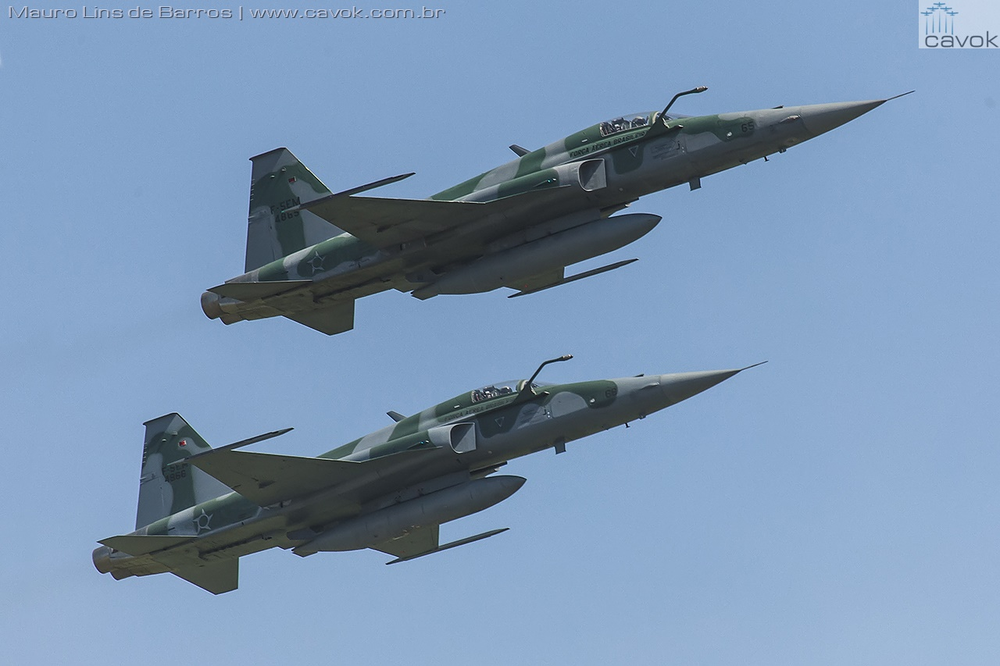

SOBRE A AERONAVE
FICHA TÉCNICA
Fabricante Northrop Grumman Corporation
Motor: General Electric J85-GE-21 de 5.000 lb com PC
Envergadura 8,13 M
Comprimento 14,45 M
Altura 4,08 M
Peso Vazio | Peso Máx. 4.349 Kg | 11.193 Kg
Velocidade Máx. 1.058,32 Kt | 1,60 Ma [1.960 Km/h]
Teto Operacional 51.837,27 Ft [15.800 M]
Alcance 1.814 Km (com CL tanque)
Emprego Defesa Aérea | Ataque | Interdição | Guerra Eletrônica
O Northrop F-5 Tiger II é o principal caça de 1ª Linha da Força Aérea Brasileira. O avião está em serviço no Brasil desde 1975, tendo recebido uma extensa modernização que praticamente o tornou “outro caça”.
No entanto, o Tigre, como também é chamado pelos militares e entusiastas, se aproxima da sua aposentadoria. Neste ano a FAB deve receber os primeiros caças F-39 Gripen operacionais. Adquiridos em 2014, os 36 novos jatos substituirão o F-5, bem como o AMX A-1, dedicado às missões de ataque e reconhecimento.
INFORMAÇÕES EXTRAS
Período de Atividade 1975 - Atualmente
Designação F-5EM
Matrículas 4820, 4823 a 4830; 4834, 4836, 4837, 4839, 4841
Exemplares no Brasil 51 exemplares
Armamento Foguetes 70 mm (SBAT 70, Skyfire, Mk4, Mk 40 e Mk 76);
MAA IR AIM-9B SideWinder, MAA IR MAA-1 Piranha, MAA IR Rafael Python 3 e 4, MAA BVR Rafael Derby;
7 pontos de fixação para até 3.200 kg;
1 Colt Pontiac M39A3 de 20 mm (280 projéteis);
Alvos rebocáveis Equipaer AV-CAA;
Pod de exercício SUU 20A/A ou Equipaer EQ BRD-20;
Pod EW CT-51F Caiman;
Sinalizador (flare) LU-2B;
Bombas de exercício BEX-11 e PBB-24;
Bombas convencionais série Mk81/82/83/84 e BAFG 230/460/920;
Bombas incendiárias BINC-200 e BINC-300;
Bomba BGL Elbit Lizard;
Bomba GPS/INS AEQ SMKB-82
Unidades Aéreas 1º Grupo de Aviação de Caça - Esquadrão Senta a Púa (1º GAVCA)
1º Esquadrão do 14º Grupo de Aviação - Esquadrão Pampa (1º/14° GAv)
1º Esquadrão do 4º Grupo de Aviação - Esquadrão Pacau (1º/4° GAv)
1º Grupo de Defesa Aérea - Esquadrão Jaguar (1º GDA)

FONTE: clique aqui E aqui
ASSISTA A UM VÍDEO DA AERONAVE AQUI: clique aqui
voltar